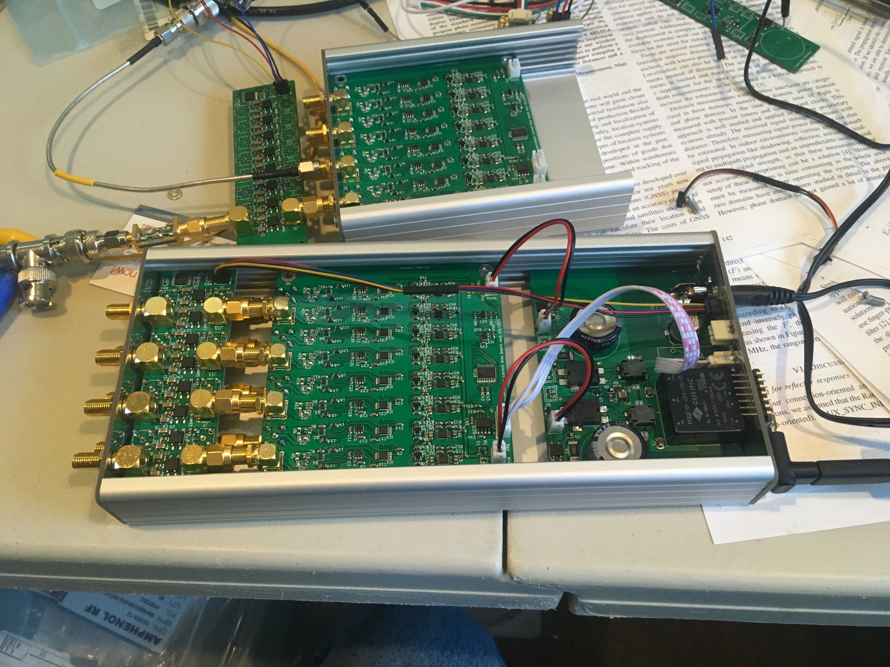
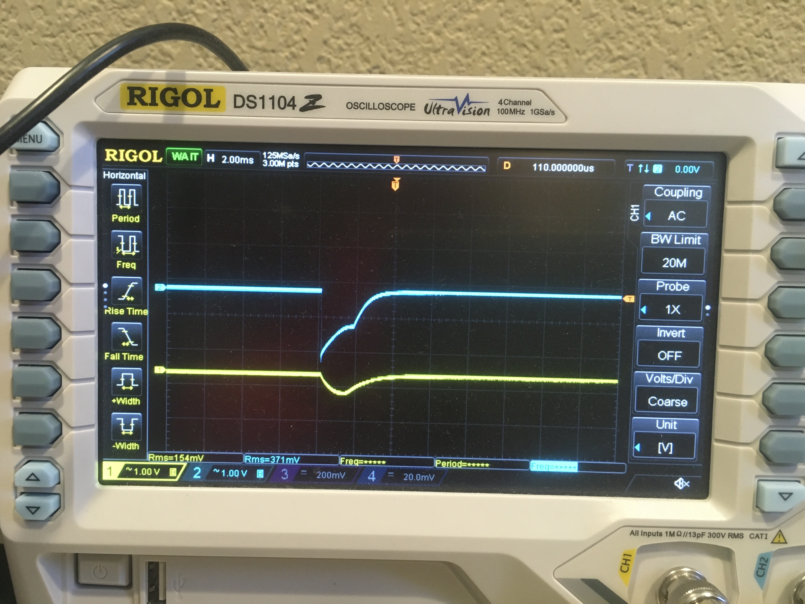
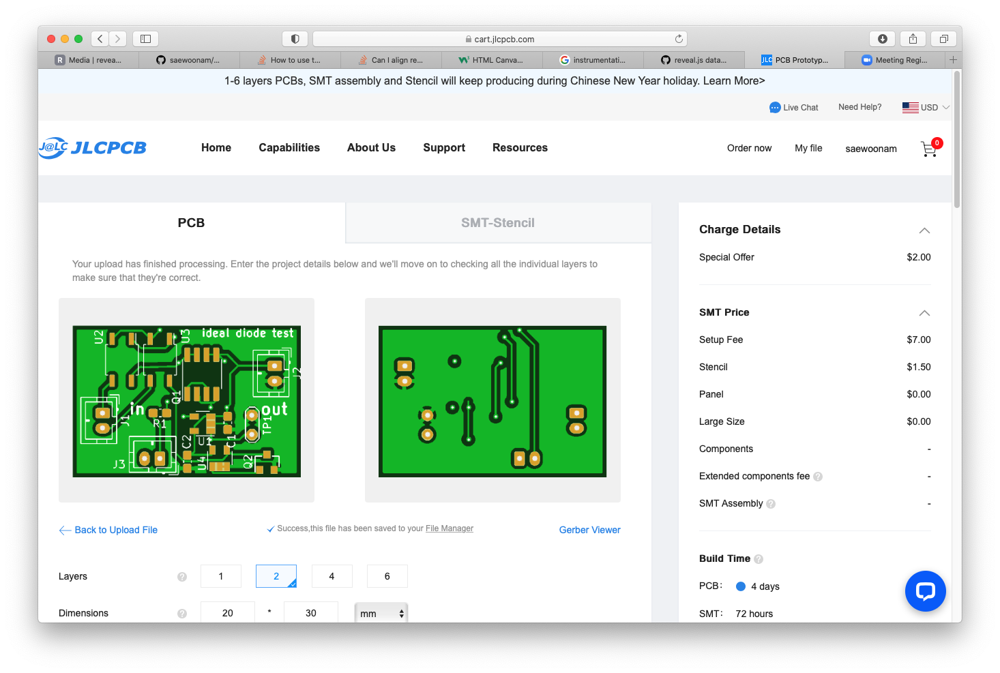
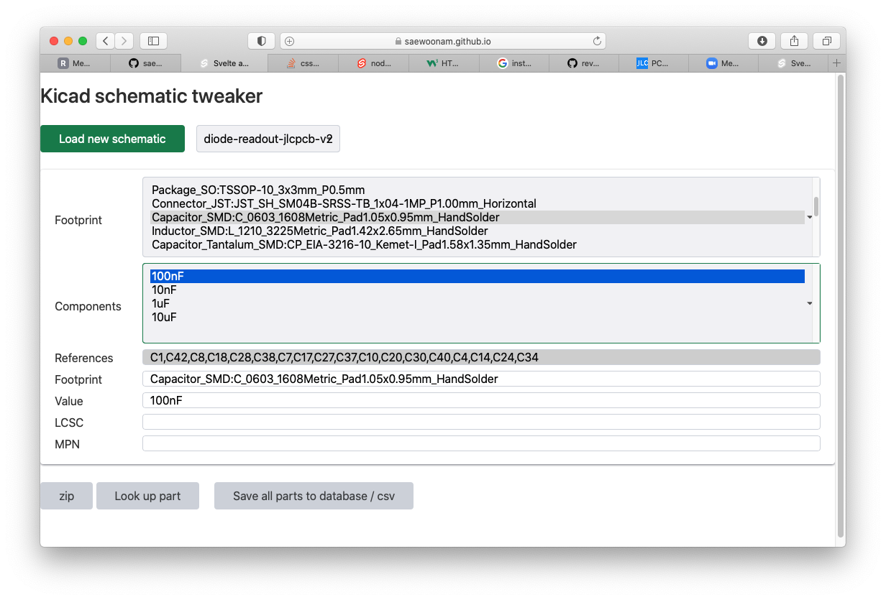
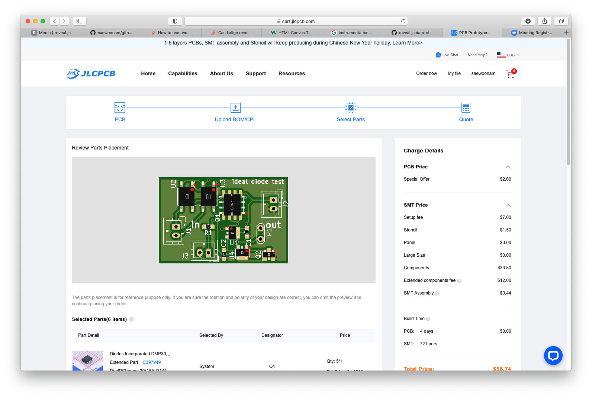
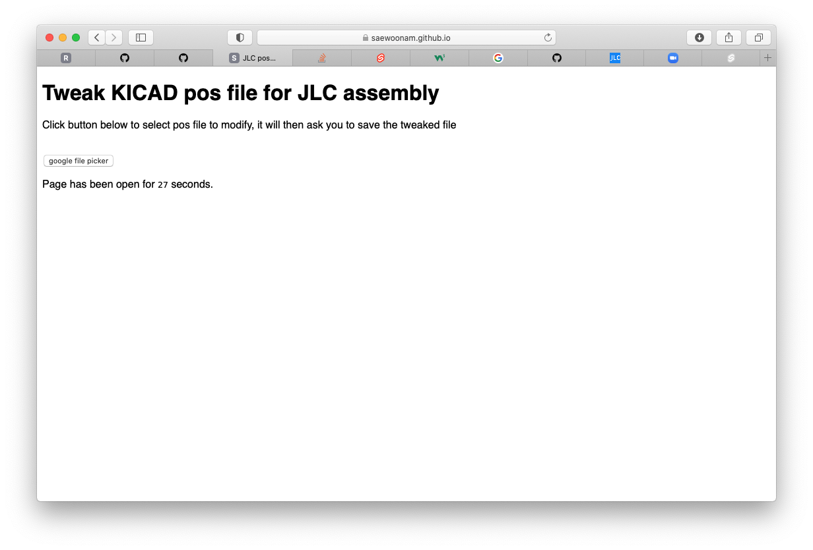
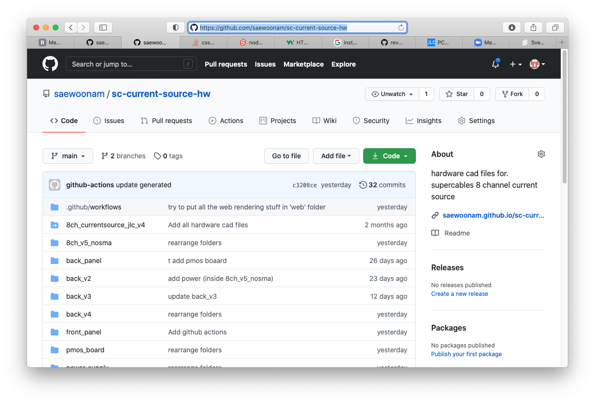

Nam Update 2021-2-17
- Programming only in javascript to raise my competence
- revealjs, svelte, github-pages, github actions
- Supercables current source
- Low noise, $\pm$100 mA (at least as good SRS)
- 8 channels
- Can be adapted to bias SNSPDs...$\pm$100 uA
- power on/down glitch controlled
- Software tools for kicad and supercables current source
- kicad tools: bom generator, position fixer for assembly
- kicad schematic / layout viewer
8 Channel current source board

Power glitch on power off (fixed with super-cap circuit)

JLCPCB.COM Assembly ... Javascript code to help
- Generate BOM (Bill of Materials)
- Each item on the schematic needs a part number
- Consolidate identical items... any typos screw up BOM
- Fix "pos"ition file... Orientation of the part
- Orientation of the part out of the tape / reel
Fast and low-cost PCB fab and assembly: JLCPCB.com

Upload manufacturing files
Schematic Data Tweaker

Not all parts are correctly oriented

Another github hosted program

Online viewer for schematics and pcb layout

Example of online viewer running...